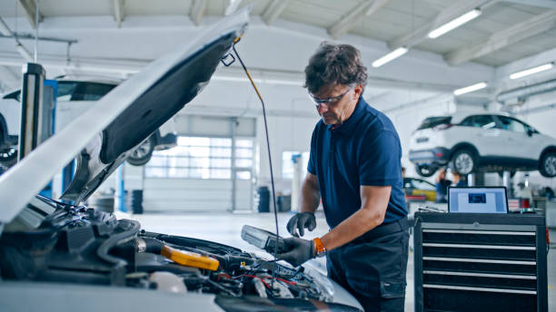
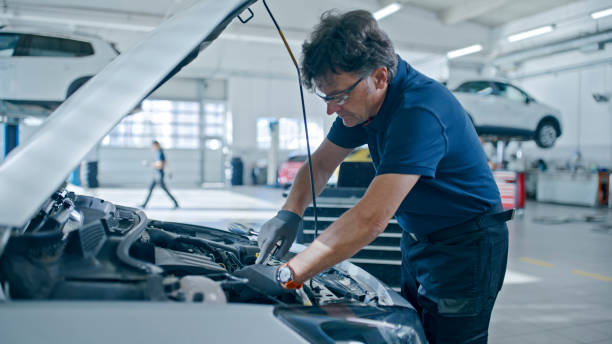

Reprogrammation et réparation calculateur
Stage 1 / Stage 2, optimisation de puissance et de couple, correction de défauts moteur, réparation en cas de panne calculateur.
Réparation mécanique générale
Diagnostic électronique, freinage, embrayage, distribution, climatisation, entretien courant et boîte de vitesses.
Diagnostic électronique avancé
Analyse de capteurs, calculateurs, défauts réseau et pannes complexes avec équipements professionnels.
Entretien & climatisation
Nettoyage, contrôle technique, entretien courant et dépannage climatisation pour un confort optimal.
Suspension & Direction
Inspection, entretien et réparation du système de suspension et de direction pour sécurité et efficacité.
- Contrôle des amortisseurs, ressorts et silentblocs
- Remplacement rotules, biellettes et roulements
- Réglage de la géométrie (parallélisme)
- Diagnostic des bruits et vibrations

Freinage
Entretien complet avec remplacement des plaquettes, disques, huiles et contrôles de sécurité.
- Remplacement plaquettes et disques
- Purge et remplacement du liquide de frein
- Contrôle et diagnostic ABS / ESP
- Vérification des étriers et flexibles

Vidange & Filtration
Remplacement d’huile et filtres, diagnostic et maintenance pour préserver les performances moteur.
- Vidange huile moteur selon préconisations constructeur
- Remplacement filtres à huile, air, habitacle et carburant
- Contrôle des niveaux
- Remise à zéro de l’indicateur d’entretien
Gestion des systèmes antipollution
Diagnostic et réparation des systèmes antipollution pour conformité et efficacité.
- Diagnostic FAP, vanne EGR et AdBlue
- Nettoyage et régénération du filtre à particules
- Contrôle des sondes lambda et catalyseur
- Mise en conformité pour le contrôle technique
Économie de carburant
Optimisation logicielle et mécanique pour améliorer consommation et performances.
- Optimisation de la cartographie moteur
- Contrôle injecteurs et admission d’air
- Nettoyage du circuit d’admission
- Conseils d’entretien pour réduire la consommation
Reprogrammation Stage 1
Stage 1 pour gains de puissance et couple, tests et garanties selon l’intervention.
- Lecture et sauvegarde du logiciel d’origine
- Gain de puissance et de couple en toute sécurité
- Essai routier et contrôle après intervention
- Retour à l’origine possible
Réparation de compteurs
Réparation et remplacement des tableaux de bord et instruments électroniques.
- Réparation d’afficheurs et pixels défectueux
- Réparation des aiguilles et voyants
- Remplacement et programmation de tableau de bord
- Diagnostic des défauts de communication
Reset Airbag
Réinitialisation des calculateurs et suppression des codes d’erreur après intervention.
- Lecture et effacement des codes défaut
- Réinitialisation du calculateur airbag après choc
- Contrôle des capteurs et connectiques
- Extinction du voyant airbag
Réparation de calculateurs
Diagnostic et réparation des calculateurs moteurs, BSI, BCM et autres modules électroniques.
- Diagnostic ECU, BSI, BCM, ABS
- Réparation électronique sur carte
- Clonage et programmation de calculateur
- Tests sur banc avant remontage
Codage de clés
Programmation et synchronisation des clés et systèmes antidémarrage.
- Ajout ou remplacement de clé
- Programmation de transpondeur et télécommande
- Synchronisation antidémarrage
- Solution en cas de perte de toutes les clés
Diagnostic complet
Contrôle complet avec analyse électronique pour détecter toutes anomalies.
- Lecture des défauts sur tous les calculateurs
- Analyse des paramètres en temps réel
- Contrôle moteur, transmission, ABS et airbag
- Rapport clair et devis avant réparation
Distribution
Remplacement et entretien des systèmes de distribution pour garantir la synchronisation moteur.
- Remplacement courroie ou chaîne de distribution
- Remplacement galets, tendeur et pompe à eau
- Calage moteur précis
- Respect des intervalles constructeur
Scanners de diagnostic
Diagnostic multimarque avancé pour identifier rapidement défauts ABS, airbag, transmission et plus.
- Valises de diagnostic multimarques
- Détection des défauts ABS, airbag, boîte de vitesses
- Mises à jour et accompagnement
- Conseils pour choisir l’outil adapté
Outils de programmation
Programmation et configuration des modules pour restaurer ou optimiser les fonctions du véhicule.
- Programmation de modules électroniques
- Codage et configuration d’options
- Mise à jour des logiciels calculateurs
- Adaptation après remplacement de pièces
Équipement d’atelier
Fourniture et maintenance d’équipements professionnels pour ateliers et garages.
- Fourniture d’équipements professionnels
- Installation et mise en service
- Maintenance et réparation
- Conseils pour l’aménagement de votre atelier
Electricité automobile
Dépannage batterie, alternateur, câblage, capteurs et réseaux électriques du véhicule.
- Test batterie, alternateur et démarreur
- Réparation de faisceaux et connectiques
- Diagnostic capteurs et réseaux CAN
- Éclairage et accessoires électriques
Moteur services avancés
Interventions complexes visant à optimiser et restaurer les performances moteur.
- Diagnostic des pertes de puissance et bruits moteur
- Réfection de culasse et joint de culasse
- Remplacement turbo et injecteurs
- Contrôle de compression